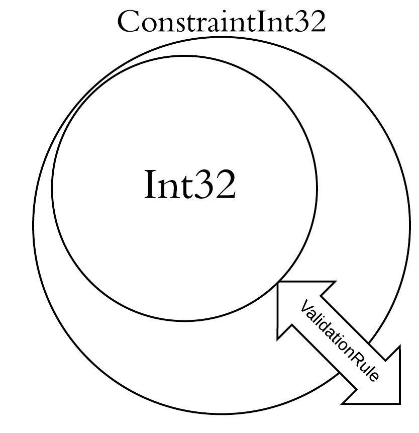

Multiple items
union case Probability.Probability: float -> Probability
--------------------
type Probability = | Probability of float
Full name: index.Probability
Multiple items
val float : value:'T -> float (requires member op_Explicit)
Full name: Microsoft.FSharp.Core.Operators.float
--------------------
type float = System.Double
Full name: Microsoft.FSharp.Core.float
--------------------
type float<'Measure> = float
Full name: Microsoft.FSharp.Core.float<_>
type bool = System.Boolean
Full name: Microsoft.FSharp.Core.bool
Multiple items
val int : value:'T -> int (requires member op_Explicit)
Full name: Microsoft.FSharp.Core.Operators.int
--------------------
type int = int32
Full name: Microsoft.FSharp.Core.int
--------------------
type int<'Measure> = int
Full name: Microsoft.FSharp.Core.int<_>
union case Option.None: Option<'T>
union case Option.Some: Value: 'T -> Option<'T>
Value constraint at compile-time
By Fahd Abdeljallal
What led me up to do this project ?
Background -- Type Provider (TP)
- Compiler extension
- Grasp data from the outside world
- Traverse the data in a type-safe manner, interactively
The extension
- Upper, Lower Constraint
- Done only at runtime
- Basic F# types
The extension : Upper, Lower Constraint (1)
The extension : Upper, Lower Constraint (2)
- Basic type has a validation rule inside himself

The extension : Done only at runtime
- Compile-time constraint
-
Static method
1:
2:
3:
|
type MultipleOf5 = Constraint.Numbers.ConstraintInt32<SomeValidationRule>
let aValueFollowingTheRule = 5
let value = MultipleOf5.Create<aValueFollowingTheRule>()
|
- Problem : Only working with Literals / Basic F# types
The extension : Basic F# types at compile-time
What's next?
- Add some other types if needed
- Operations between these types ?